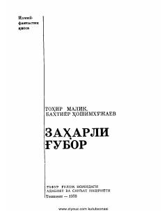

ZGIlmiy-fantastik ruhda yozilgan, yovuzlik va ezgulik kurashi haqidagi qissa.
Ushbu ilmiy-fantastik qissada kapitalistik jamiyatdagi xudbinlik va hokimiyatga intilish illatlari tanqid qilinadi. Asar bosh qahramoni Charlz Long o'z iste'dodini yovuz maqsadlar yo'lida ishlatmoqchi bo'lganda, sovet olimi Ismoil Umidov va boshqa progressiv kuchlar unga qarshi kurashadilar.